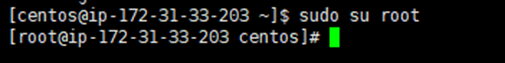
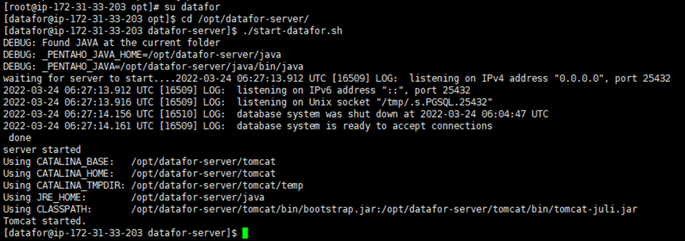

Datafor Installation (CentOS)
Step 1. Switch to the root user
sudo su root

Step 2. Create the 'datafor' user group
groupadd datafor
Step 3. Create the 'datafor' user, add it to the 'datafor' user group, and set the user password to 'datafor' as well.
adduser datafor -g datafor
passwd datafor

Step 4. Navigate to the directory containing the installation package and extract the package to the /opt directory.
unzip -o datafor-server_202203240605.zip -d /opt/
Step 5. After extracting, go to the /opt/ directory and modify permissions.
cd /opt/
chmod -R 700 datafor-server
chown -R datafor datafor-server
chgrp -R datafor datafor-server

Installation completed.
Start Datafor
Please operate as the 'datafor' user
su datafor
cd /opt/datafor-server/
Start the service
./start-datafor.sh

Stop Service
./stop-datafor.sh

Check Service Start/Stop Status
ps -ef|grep tomcat

If the command produces the above output, it indicates that the service is in a running state.
Login
URL: http://localhost:28080/
username / password
admin/passworddemo/demo
Update the System
Place the update package datafor-upload.jar in the datafor-server\update folder and restart the system.